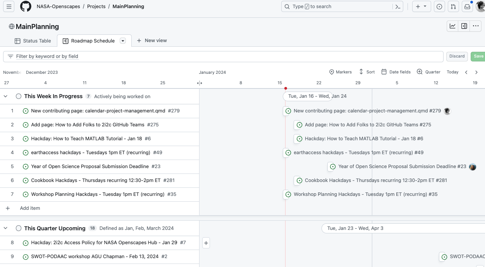

Community Call: GitHub for NASA Openscapes community calendaring & project management
An open work in progress
Date: Tuesday, February 20, 2024
Time: 10:00 - 11:00 am PT (find your local time)
Where: Zoom
Register (free) via Zoom to get the meeting link
NASA Openscapes Mentors develop, teach, and support many workshops, events, conversations, and each other with their main goal to support scientists using NASA Earthdata as they migrate workflows to the cloud. We all want (need!) to be able to see ongoing NASA Openscapes events and relevant events across 11 NASA data centers, their planning status, and where they fit in our calendars. We need something that is lightweight with a low barrier to entry. Sure, there are many add-ons to make it more “functional” (GitHub templates, Actions), but for whom? These might be barriers to people less familiar with GitHub.
We embrace working in the open and sharing how-we-work early before trying to make something “perfect” that doesn’t suit people’s needs. Join us for a screenshare-and-tell of how we’re using GitHub Issues, Projects, and Roadmap to have an open, dynamic way for many people to use and contribute to this “calendar”. It’s not just about the tools though. We’ll talk about how it started, how it’s going, the mindset, skills, and how we document as we go.
Bring your questions and your experiences. We’re keen to hear about how others have done this and how we can improve our setup. We always save time for audience discussion!
Speakers will include Bri Lind, a Geospatial Data Scientist at NASA’s Land Processes Distributed Active Archive Center (LP DAAC) and a NASA Openscapes Mentor, Stefanie Butland from the Openscapes team, and staff from other NASA data centers who are trying out this approach.
Background and Resources
Starter documentation in our NASA Earthdata Cloud Cookbook: GitHub for Calendaring and Project Management
Read more on our blog about how we work with NASA Openscapes Mentors to support scientists using data from NASA Earthdata as they migrate workflows to the cloud.
Related CSCCE Open Source Tools Trials:
- Using GitHub to facilitate community activities
- GitHub and Bitergia to support research and developer communities
- Using GitHub and HedgeDoc to organize and support community events
